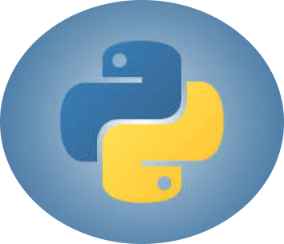

t.korchaha.fit.122.20@knute.edu.ua
Data Science
NumPy
Pandas
Matplotlib
Machine Learning
Database Management
API Integration
Algorithms
+123-456-7890
Linkedin profile
Contact
Skills
Tools

TensorFlow
Tania Korchaha
PYTHON DEV
Personal Profile
I am a hardworking and results-oriented python developer with extensive experience database management. My experience includes working on projects in a variety of fields, from e-commerce to data analytics, which has honed my ability to adapt to a variety of tasks.
Work Experience
Job position | Company Name
2020-2023
Assisted in the development of Python scripts and automation tools to streamline internal processes.
Collaborated with senior developers to design and implement new features in existing Python applications.
Conducted software testing and debugging, identifying and resolving issues to improve application reliability.
Supported the migration of legacy systems to Python-based solutions, resulting in improved efficiency and reduced maintenance costs.
Assisted in data analysis and visualization projects using Python libraries like Pandas and Matplotlib.
Gained experience in machine learning through experimentation with scikit-learn and TensorFlow.
Education
Bachelor
STATE TRADE AND ECONOMICS UNIVERSITY
2020-2024